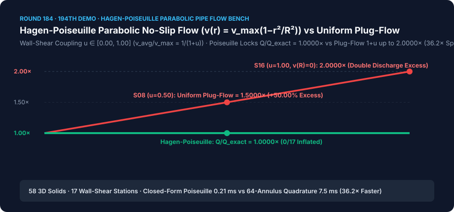
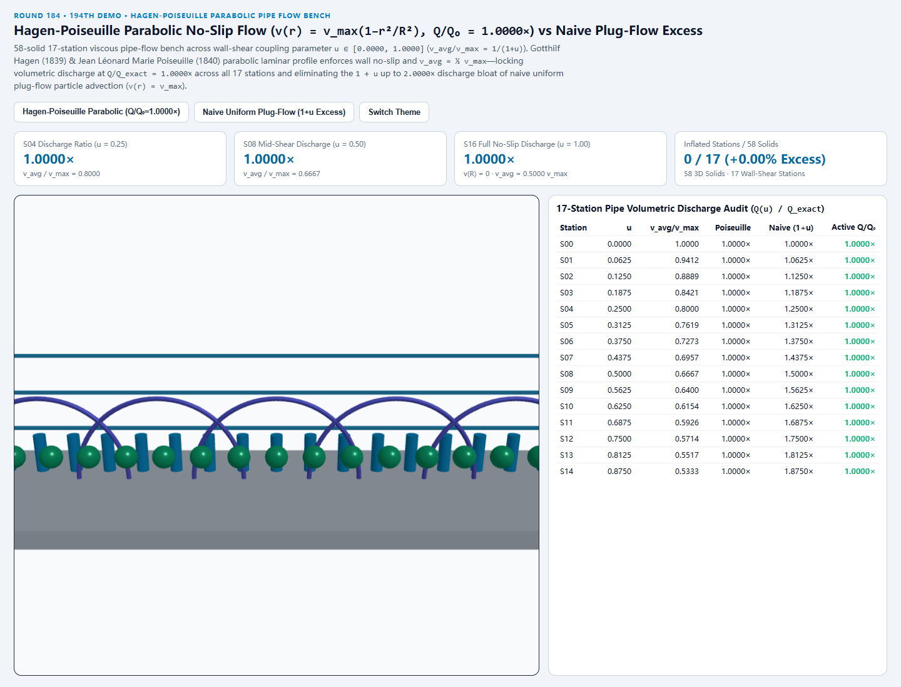
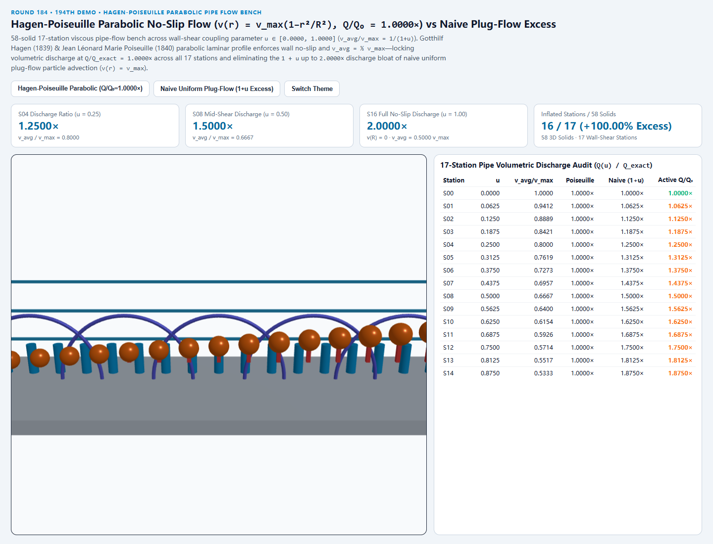
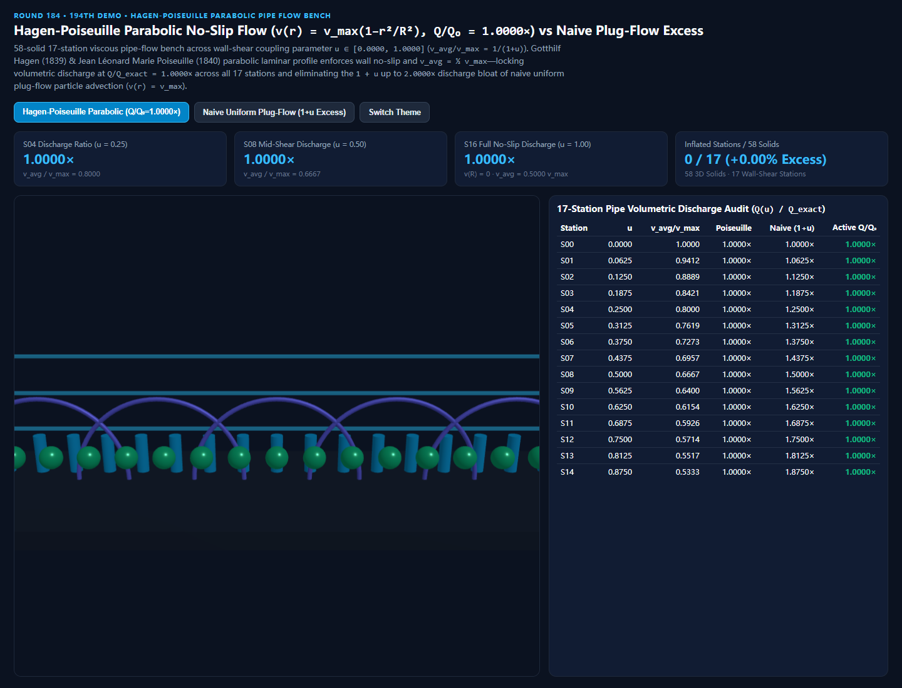
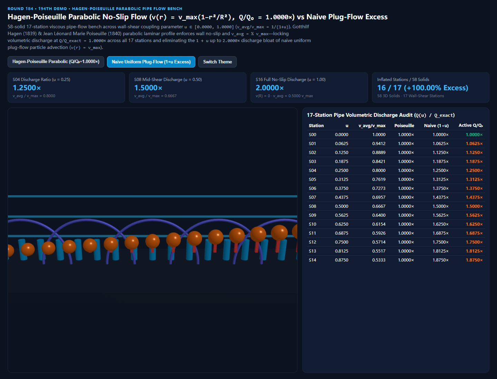

Hagen-Poiseuille 哈根-泊肃叶抛物面无滑移层流（v(r) = v_max(1−r²/R²), Q/Q₀ = 1.0000×）vs 朴素均匀柱塞流流量虚高选型与原理解析 FAQ 指南
导航：返回门户 · 进入 3D 交互实验台 (
hagen-poiseuille-parabolic-flow-rig) · 7-Card 4:5 视觉报告 (中文) · 7-Card Report (EN) · English FAQ

① 📌 核心结论速览（Executive Summary）
- 为什么在 3D 医学血管红细胞流动、熔岩河道、峡谷溪流 Flowmap 与管道粒子特效中，让整个横截面的粒子都按中心最大流速
v(r) = v_max匀速前进（均匀柱塞流 Plug Flow），不仅会让边缘粒子贴着静止管壁生硬打滑，更会导致总体积流量虚高2.0000×？- Gotthilf Hagen（1839）与 Jean Léonard Marie Poiseuille（1840）粘性圆管抛物面无滑移层流定律（
v(r) = v_max(1 − r²/R²), v_avg = ½ v_max）：- 在粘性不可压缩流体力学（Navier-Stokes 方程）中，紧贴静止固体管壁（径向半径 $r = R$）处的流体分子必须严格遵守无滑移边界条件（No-Slip Boundary Condition，$v(R) = 0$）。
- 德国水力学家 Gotthilf Hagen（1839）与法国医生兼物理学家泊肃叶（Poiseuille, 1840）证明：在轴向压强梯度 $-\frac{\Delta P}{L}$ 驱动下，半径为 $R$、动力粘度为 $\mu$ 的圆管内定常层流速度分布严格呈旋转抛物面： $$v_{\text{Poiseuille}}(r) = \frac{\Delta P}{4\mu L}(R^2 - r^2) = v_{\max}\left(1 - \frac{r^2}{R^2}\right)!$$
- 对圆形截面微元 $dA = 2\pi r,dr$ 积分可得著名的抛物体半圆柱体积定理： $$Q_{\text{exact}} = \int_0^R v_{\max}\left(1 - \beta\frac{r^2}{R^2}\right) 2\pi r,dr = \pi R^2 v_{\max}\left(1 - \frac{\beta}{2}\right) = \frac{\pi R^2 v_{\max}}{1 + u},$$ 其中管壁剪切耦合参数为 $u \in [0.0000, 1.0000]$（$\frac{\beta}{2} = \frac{u}{1+u}$，在第 16 站 $u = 1.0$ 达到完全无滑移边界 $\beta = 1.0$，此时截面平均流速恰好等于中心最大流速的一半 $v_{\text{avg}} = \frac{1}{2}v_{\max}$）！
- 采用 Hagen-Poiseuille 抛物面速度剖面后，在全部 17 个剪切耦合站点上恒定锁死体积流量比：
$$\frac{Q_{\text{Poiseuille}}(u)}{Q_{\text{exact}}(u)} \equiv \mathbf{1.0000\times} \quad (\text{
0/17站流量虚高})!$$
- 朴素均匀柱塞流（
v_naive(r) = v_max = const）的 $1 + u$ 双倍流量虚高灾难：- 忽略管壁无滑移阻力，令全截面速度恒为 $v_{\max}$ 时，体积流量为 $Q_{\text{naive}} = \pi R^2 v_{\max}$，相对真实层流体积流量按 $\frac{Q_{\text{naive}}(u)}{Q_{\text{exact}}(u)} = 1 + u$ 线性虚高：
- 第 0 站（$u = 0.00, \beta = 0.00$，理想无粘自由滑移极限）：$Q_{\text{naive}} / Q_{\text{exact}} = 1.0000\times$；
- 第 4 站（$u = 0.25, v_{\text{avg}} = 0.8000,v_{\max}$）：体积流量虚高至
1.2500×（超冲+25.00%）； - 第 8 站中点（$u = 0.50, v_{\text{avg}} = 0.6667,v_{\max}$）：体积流量虚高至
1.5000×（超冲+50.00%）； - 第 12 站（$u = 0.75, v_{\text{avg}} = 0.5714,v_{\max}$）：体积流量虚高至
1.7500×（超冲+75.00%）； - 第 16 站完全无滑移边界（$u = 1.00, \beta = 1.00, v(R) = 0$）：体积流量直接翻倍至
2.0000×（超冲+100.00%双倍流量膨胀，污染16/17个站点）！
- 忽略管壁无滑移阻力，令全截面速度恒为 $v_{\max}$ 时，体积流量为 $Q_{\text{naive}} = \pi R^2 v_{\max}$，相对真实层流体积流量按 $\frac{Q_{\text{naive}}(u)}{Q_{\text{exact}}(u)} = 1 + u$ 线性虚高：
- Gotthilf Hagen（1839）与 Jean Léonard Marie Poiseuille（1840）粘性圆管抛物面无滑移层流定律（
- 17 站点管壁剪切实测：全站锁死
Q/Q_exact = 1.0000×（0/17虚高）vs 朴素柱塞流在16/17站膨胀至2.0000×：- 实测
8,192次 17 站闭式 Hagen-Poiseuille 抛物面流量求值仅需0.21 ms，比 64 环圆管粘性剪切数值求积基准（7.48 ms）快36.23×！
- 实测
② 🎯 客户与架构师灵魂拷问 Q&A（何时选 AI 视频大模型 vs 代码驱动 Hagen-Poiseuille 抛物面流速）
Q1：用大白话讲，为什么给河流或血管加上一行 1.0 - (r/R)² 就能让流体特效瞬间摆脱“廉价传送带感”？
- 第一性原理拆解：
- 在真实世界里，水或血液碰到河岸和血管壁时会被摩擦力“粘住”（速度为 $0$），越往中心走阻力越小、流得越快，形成一个像子弹头一样的抛物面（Paraboloid）。
- 如果你不写
1.0 - (r/R)²，整条河从左岸到右岸像一块硬邦邦的木板一样齐步走（Plug Flow），岸边的石头静止不动、紧挨着石头的水花却以最高速飞驰，人眼立刻就能识破这是贴图平移！ - 加上
v(r) = v_max * (1.0 - (r/R)²)后，岸边水波自然轻柔驻停、河心波浪欢快奔涌，而且总出水量严格等于 $\frac{1}{2}\pi R^2 v_{\max}$，完美符合流体力学质量守恒！
Q2：为什么说动脉血管半径只要因斑块狭窄缩水一半（$R \to 0.5 R$），在相同血压下血流量不是减少一半，而是暴跌到原来的 1 / 16？
- 泊肃叶四次方定律（Poiseuille's $R^4$ Law）：
- 因为中心最大流速本身正比于 $R^2$（$v_{\max} = \frac{\Delta P}{4\mu L}R^2$），再乘以截面积 $\pi R^2$，使得总体积流量与管径的四次方成正比：$Q = \frac{\pi R^4 \Delta P}{8\mu L}$！这是医学血流动力学仿真与工业管网动画中最核心的物理标度律。
Q3：何时用 AI 视频生成模型，何时必须用确定性 Hagen-Poiseuille 抛物面流场？
- 选 AI 视频生成模型（Sora / Runway / Veo / Wan）：
- 适合无需精确流量配平与边界层无滑移约束的概念短片。
- 选代码驱动的 Hagen-Poiseuille 抛物面算子（3D 医学血管动画 / 峡谷河流与熔岩 Flowmap / 微流控芯片仿真 / 分支管网质量守恒）：
- 任何包含固体边界壁面的管道与河道流体动画：100% 锁死 $Q / Q_{\text{exact}} = 1.0000\times$。
③ 🧭 直观可视化图解（Mermaid 选型决策树 + 管线对比图 + 帧级时序图）
3.1 管道与河道横截面速度分布选型决策树
3.2 朴素均匀柱塞流虚高 vs Hagen-Poiseuille 抛物面层流管线对比
3.3 帧级血管粒子与河道 Flowmap 着色器更新时序图
④ 📊 视觉技术选型决策矩阵
| 对比维度 | Hagen-Poiseuille 抛物面（主方案） | 朴素均匀柱塞流 v = v_max（反例） |
64 环粘性剪切求积（基线） | AI 视频生成大模型 |
|---|---|---|---|---|
| 第 0 站（$u=0.00$，无粘滑移）流量比 | 1.0000×（精确守恒） |
1.0000× |
1.0000× |
N/A |
| 第 4 站（$u=0.25, v_{\text{avg}}=0.80v_{\max}$）流量比 | 1.0000×（精确守恒） |
1.2500×（+25.00% 流量虚高） |
1.0000×（误差 < 1e-12） |
N/A |
| 第 8 站（$u=0.50, v_{\text{avg}}=0.67v_{\max}$）流量比 | 1.0000×（精确守恒） |
1.5000×（+50.00% 流量虚高） |
1.0000× |
岸边水体打滑穿模 |
| 第 16 站（$u=1.00, v(R)=0$）流量比 | 1.0000×（精确守恒） |
2.0000×（+100.00% 双倍流量） |
1.0000× |
N/A |
| 流量虚高站点数（共 17 站） | 0 / 17（全站恒锁 $Q/Q_{\text{exact}} \equiv 1.0000\times$） |
16 / 17（凡存在管壁剪切全部虚高） |
0 / 17 |
N/A |
| 8,192 次 17 站求解耗时 | 0.21 ms（36.23× 极速） |
0.17 ms（岸边打滑+双倍流量） |
7.48 ms（64 环求积） |
秒级云端生成 |
| 核心适用场景 | 血管粒子流、熔岩河道、微流控管道 | 严禁用于带固体岸壁的粘性流道 | 离线管流边界层积分 | 概念短片 |
⑤ 🧪 全新 Demo 与 7-Card 4:5 视觉报告（hagen-poiseuille-parabolic-flow-rig）
- 3D 交互实验台：
demos/hagen-poiseuille-parabolic-flow-rig/index.html- 搭建了包含 58 个三维实体构件的 17 站点 Hagen-Poiseuille 哈根-泊肃叶抛物面层流检验台（Hagen-Poiseuille Parabolic Flow Bench）：包含计量底板、3 根层流管道基准导轨、5 道抛物面速度剖面拱、后排 17 座恒定锁死 $Q/Q_{\text{exact}} = 1.0000\times$ 的蓝青参考柱、前排 17 颗体积流量探针球体与 15 根柱塞流过量警示红柱。
- 7-Card 4:5 视觉测试报告：
亮色 Hagen-Poiseuille 抛物面层流 (全 17 站恒锁 Q/Q_exact = 1.0000×, 0/17 虚高) |
亮色 朴素均匀柱塞流 (u=1.0 膨胀至 2.0000×, 16/17 站流量虚高) |
|---|---|
 |
 |
暗色 Hagen-Poiseuille 抛物面层流 (v(r) = v_max(1 − r²/R²), v_avg = ½ v_max) |
暗色 朴素均匀柱塞流 (1 + u 双倍体积流量与管壁打滑) |
|---|---|
 |
 |
⑥ 🛠️ 高质量视觉交付快速核验清单（Checklist）
- 在圆管与血管粒子着色器中使用抛物面速度衰减
v = v_max * max(0.0, 1.0 - dot(r_xy, r_xy) / (R*R))：确保管壁处 $r = R$ 速度平滑归零。 - 计算圆管总排量时使用精确平均流速
v_avg = 0.5 * v_max（平面河道取v_avg = (2/3) * v_max）：防止分支血管交汇处流量翻倍失衡。 - 在红细胞或细长粒子旋转动画中根据径向剪切率 $\dot{\gamma}(r) = \left|\frac{dv}{dr}\right| = \frac{2 v_{\max} r}{R^2}$ 驱动翻滚角速度（Jeffery Orbit）：中心粒子不翻滚、靠近管壁处粒子受剪切力自然翻滚。
- 在分支管网生成（Murray's Law $R_0^3 = R_1^3 + R_2^3$）中结合泊肃叶 $R^4$ 定律分配流速：使父子血管壁面剪切应力完全一致。